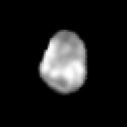
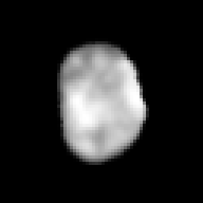
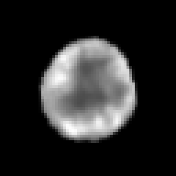
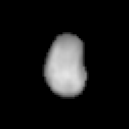
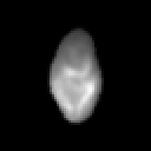
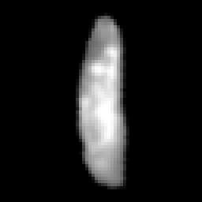
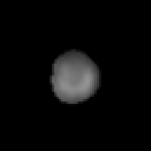
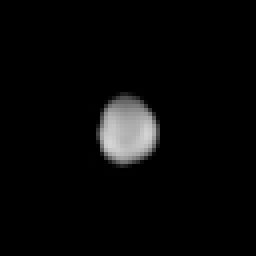
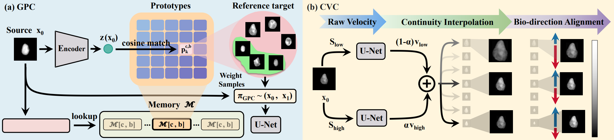

The first benchmark for senescence-conditioned cell morphology generation
Cellular senescence, a state in which cells stop dividing but remain in tissues, drives tissue ageing and is a central readout for the development of new treatments for age-associated diseases. Yet no existing cell morphology benchmark captures this phenotype. In this work, we introduce SenoMorph, a multi-tissue benchmark of paired DAPI images and transcriptome-derived senescence scores curated from multiple Xenium samples. Alongside, we release a SenoFlow-generated synthetic companion set of 873,910 score-conditioned cells, providing 10 score-conditioned trajectories per cell.
Core Resources
Dataset
Real nuclei crops + generated temporal sequences with per-cell-type protocol setup.
🤗 Hugging FaceCode
Training, inference, and evaluation scripts for our method.
GitHub RepoPretrained Models
Released checkpoints for reproducible benchmark comparison and downstream testing.
Model WeightsDataset Demo
Real DAPI Images






Synthetic Score-Conditioned Trajectories
Selected DAPI Image
Low senescence score
High senescence score


Classification
Method Summary
We formalize the task as constructing a velocity field \(v_\theta : \mathcal{X} \times [0,1] \times \mathcal{C} \times \mathcal{S} \rightarrow \mathbb{R}^d\), which satisfies two geometric properties: (P1) batch-invariant pairing, which decouples the supervisory signal from minibatch composition; and (P2) Lipschitz-continuous, feature-aligned dynamics, which respect the biological geometry along the senescence axis.
On this basis, we introduce SenoFlow, which consists of two key components: Global Prototype Coupling (GPC), an operator on \(\pi\) that satisfies (P1), and Continuous-score Velocity Correction (CVC), an operator on \(\mathcal{T}\) that satisfies (P2).

Evaluation Protocol and Benchmark Comparison
Evaluation Protocols
Automatic Metrics
- FID: measures realism of generated images via feature distributions.
- KID: complements FID with more reliable estimation under small sample sizes.
- mean |ρ|: the mean absolute Spearman correlation between the senescence score and the most significant morphological observable per cell type.
Expert Evaluation
Specialists in senescence and cell biology review generated trajectories in a blinded setting. Scores are reported on a 1-5 scale and averaged across experts and evaluated samples.
- Realism: whether generated images resemble real cell nuclei.
- Fidelity: whether progression reflects biologically plausible ageing dynamics.
Benchmark Results
We compare SenoFlow against eleven baselines covering the major Flow Matching variant and two non-FM generators.
| Method | Lung | Prostate | Skin | ||||||
|---|---|---|---|---|---|---|---|---|---|
| FID↓ | KID↓ | |ρ| ↑ | FID↓ | KID↓ | |ρ| ↑ | FID↓ | KID↓ | |ρ| ↑ | |
| NON-FM GENERATORS | |||||||||
| cVAE | 71.7 | 44.3 | 2.0 | 78.4 | 49.1 | 3.5 | 65.2 | 39.8 | 4.1 |
| CCDM | 43.2 | 21.4 | 16.2 | 49.6 | 25.3 | 18.7 | 39.5 | 18.6 | 19.4 |
| FLOW MATCHING VARIANTS | |||||||||
| I-CFM | 85.6 | 56.8 | 30.7 | 92.3 | 61.7 | 28.4 | 78.1 | 51.2 | 32.5 |
| iMF | 14.2 | 3.7 | 10.8 | 16.5 | 7.1 | 12.1 | 13.1 | 3.2 | 9.6 |
| MeanFlow | 18.0 | 6.1 | 11.5 | 20.7 | 7.2 | 13.0 | 16.4 | 5.4 | 10.8 |
| Rectified Flow | 61.0 | 34.7 | 5.7 | 67.8 | 38.9 | 6.4 | 55.3 | 30.6 | 7.1 |
| Noise-start CFM | 36.8 | 17.2 | 57.5 | 41.5 | 19.6 | 54.8 | 33.7 | 15.3 | 55.2 |
| Contrastive FM | 26.2 | 10.8 | 30.7 | 30.4 | 12.7 | 32.3 | 23.8 | 9.5 | 28.9 |
| LogitNorm OT-CFM | 93.0 | 62.4 | 7.0 | 99.7 | 67.3 | 8.5 | 84.6 | 56.1 | 9.2 |
| CellFlow | 138.2 | 116.5 | 33.7 | 151.3 | 116.2 | 50.7 | 213.5 | 201.6 | 43.7 |
| CellFlux | 80.2 | 43.1 | 1.0 | 84.1 | 53.0 | 14.0 | 71.9 | 44.0 | 19.2 |
| SenoFlow (ours) | 12.2 | 2.3 | 82.9 | 16.1 | 6.9 | 91.8 | 11.3 | 2.1 | 88.8 |
| Method | Lung | Prostate | Skin | |||
|---|---|---|---|---|---|---|
| Realism↑ | Fidelity↑ | Realism↑ | Fidelity↑ | Realism↑ | Fidelity↑ | |
| NON-FM GENERATORS | ||||||
| cVAE | 4 | 3 | 3 | 4 | 2 | 2 |
| CCDM | 3 | 1 | 2 | 3 | 3 | 2 |
| FLOW MATCHING VARIANTS | ||||||
| I-CFM | 4 | 3 | 3 | 4 | 1 | 1 |
| iMF | 5 | 3 | 3 | 4 | 4 | 4 |
| MeanFlow | 5 | 3 | 3 | 4 | 5 | 4 |
| Rectified Flow | 4 | 3 | 3 | 4 | 2 | 3 |
| Noise-start CFM | 4 | 4 | 2 | 3 | 4 | 4 |
| Contrastive FM | 4 | 3 | 2 | 3 | 4 | 5 |
| LogitNorm OT-CFM | 4 | 3 | 2 | 3 | 1 | 3 |
| CellFlow | 2 | 2 | 2 | 3 | 1 | 1 |
| CellFlux | 3 | 2 | 3 | 2 | 3 | 3 |
| SenoFlow (ours) | 5 | 5 | 4 | 5 | 5 | 5 |